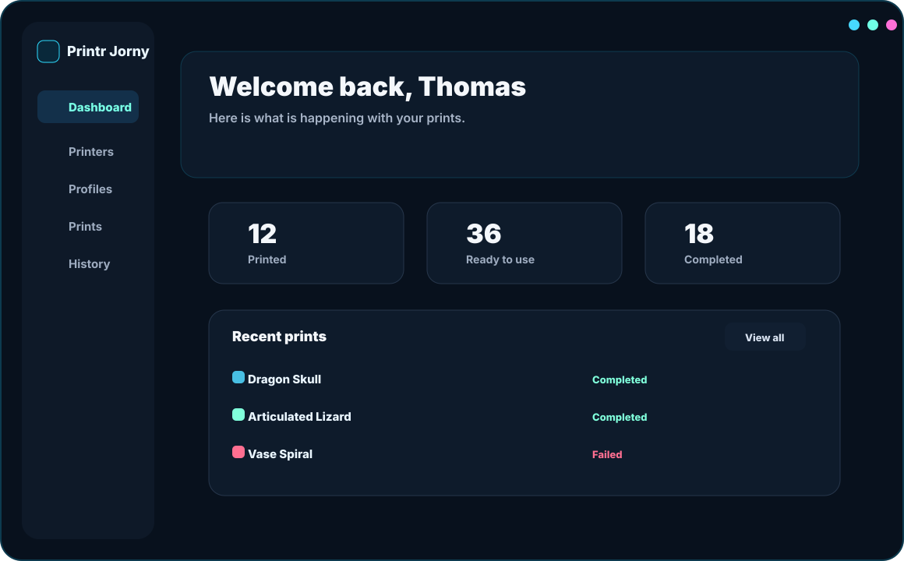
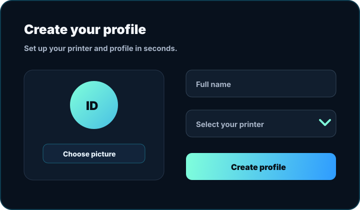
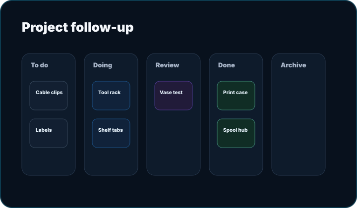

Manage printers
Add printer details, settings, and live status without clutter.
Desktop print journal for makers
Printr Jorny helps you manage prints, filament, printer status, profiles, and projects in one focused desktop app.
Offline-first. Your data stays on your machine.

Built for makers
A quiet workspace for tracking prints from idea to finished object.
Add printer details, settings, and live status without clutter.
Switch between makers, machines, and separate histories.
Review duration, cost, filament, outcomes, and notes.
Use a kanban board to move tasks from idea to done.
Designed with care
Dark, modern, and focused. Everything stays at your fingertips.


Download Printr Jorny and keep your workflow calm, visible, and organized.
Download for Windows
Version 0.2.0 Download nowYes. The app is designed around local profile data and desktop workflows.
Yes. Profiles and projects can be exported and imported.
No. It is a standalone static page in the repository's landing folder.